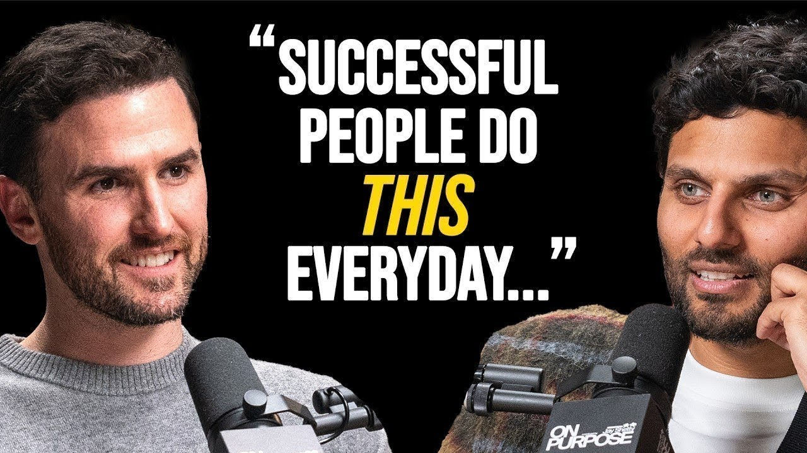
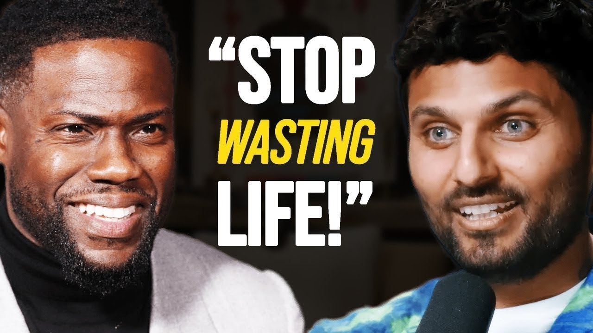
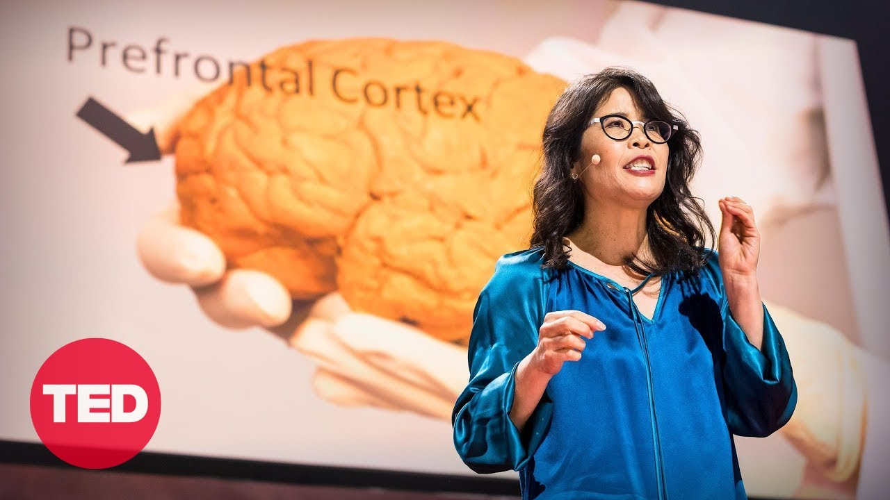
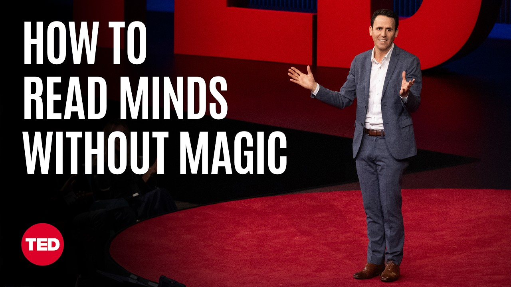
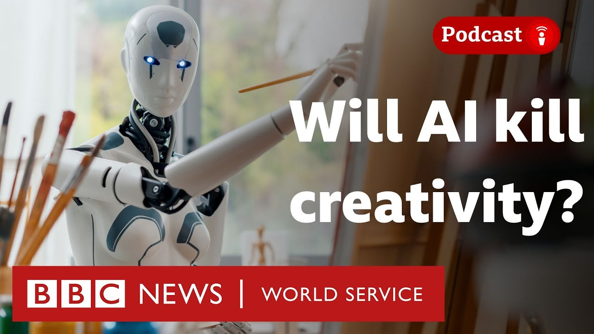

Continuous Assessment 01
UWU_ICT_24_032
This E-Portfolio contains summaries, opinions, vocabulary learning, and reflective growth from ten selected interviews and educational videos from Jay Shetty, TED Talks and other learning platforms.

Rob Dial & Jay Shetty
Lewis Hamilton
10 Truths I Wish I Knew

Kevin Hart

Wendy Suzuki TED Talk

Oz Pearlman TED Talk
BBC World Service

Artificial Intelligence Helping or Hurting Creativity
The Future of Work: Human vs. AI
Through these interviews I gained valuable knowledge about mindset, leadership, resilience, mental health, self-awareness, discipline and personal development. This assignment improved my listening, vocabulary and critical thinking skills.
In this episode of the Jay Shetty Podcast, Jay Shetty interviews Rob Dial, the host of the Mindset Mentor podcast and author of Level Up. The discussion focuses on personal growth, overcoming fear, and developing a success-oriented mindset. Rob explains the difference between primal fears, which protect us from physical danger, and intellectual fears, such as fear of failure or rejection. He emphasizes that many limitations exist only in our minds and can be overcome by focusing on positive possibilities rather than worst-case scenarios. Another key idea is the importance of having a strong “why” behind every goal. Rob believes that when a person has a meaningful purpose, they become more motivated and consistent in achieving their objectives. The conversation also highlights the importance of monitoring thoughts, practicing mindfulness, and creating distance from negative thinking patterns. Furthermore, Rob discusses the value of silence and self-reflection in understanding oneself. He encourages people to stop seeking validation from others and instead develop self-trust and inner confidence. In the final segment, he shares his philosophy that taking full responsibility for one's life is empowering because it allows individuals to control their future actions and decisions.
I found this interview very inspiring and practical. The discussion about fear helped me understand that many obstacles are created by my own thoughts rather than actual problems. I especially liked the idea that having a strong purpose can make difficult tasks feel easier and more meaningful. The advice about taking responsibility for our actions was powerful because it encourages personal growth instead of blaming circumstances or other people. Overall, this interview provides useful guidance for anyone who wants to improve their mindset and achieve their goals.
1. Primal Fear – A natural fear related to survival and safety.
2. Intellectual Fear – Fear created by thoughts, such as fear of
failure or rejection.
3. Mindfulness – The practice of being fully aware of the present
moment.
4. Self-Awareness – Understanding one's own thoughts, emotions, and
behaviors.
5. Personal Agency – The ability to make choices and take
responsibility for one's life.
Page Name: Jay Shetty Podcast
Host: Jay Shetty
Guest: Rob Dial
Platform: YouTube
Accessed Date: 20 June 2026
Link:
https://youtu.be/SJKr7BPOXY0
In this episode of the Jay Shetty Podcast, Jay Shetty interviews Lewis Hamilton, a seven-time Formula 1 World Champion. The conversation goes beyond racing and focuses on Lewis’s personal journey, challenges, and mission to create positive social change. Lewis shares how he faced bullying, racism, and discrimination during his childhood and how these experiences strengthened his determination to succeed. He explains that success in Formula 1 required resilience, discipline, and the ability to remain focused despite criticism and setbacks. A major topic of discussion is Lewis’s realization that life is about more than winning championships. He talks about finding a deeper purpose by using his influence to promote diversity, racial equality, and educational opportunities. Through initiatives such as Mission 44, he works to remove barriers that prevent young people from achieving their potential. The interview also explores mental health and self-discovery. Lewis discusses the importance of meditation, yoga, and spending time alone with his thoughts. He believes that self-reflection helps individuals understand themselves better and discover their true purpose. Throughout the conversation, he emphasizes lifelong learning, personal growth, and the importance of making a positive impact on society.
I found this interview very motivating because it showed that even highly successful people face difficulties and self-doubt. Lewis Hamilton’s story demonstrates that challenges can become sources of strength when approached with determination and a positive mindset. I was particularly inspired by his commitment to helping others through social initiatives rather than focusing only on personal achievements. His message about finding a purpose greater than oneself encouraged me to think about how I can contribute positively to my community. The interview was both inspiring and educational.
1. Resilience – The ability to recover quickly from difficulties.
2. Adversity – Challenges, hardships, or difficult situations.
3. Diversity – The inclusion of people from different backgrounds and
experiences.
4. Mentorship – Guidance and support provided by an experienced
person.
5. Self-Discovery – The process of understanding one's true identity
and purpose.
Page Name: Jay Shetty Podcast
Host: Jay Shetty
Guest: Lewis Hamilton
Platform: YouTube
Accessed Date: : 20 June 2026
Link:
https://youtu.be/AyiWKXTd9aY
In this video, Jay Shetty shares ten important truths that can help young adults navigate their twenties more effectively. He explains that many people follow beliefs and expectations inherited from society, family, and social media without questioning whether those beliefs truly align with their own values. One of the key lessons is that personal growth often begins by facing the things we avoid. Fear and discomfort can be signs that we are moving toward meaningful development. Jay also encourages viewers to examine whether their goals genuinely belong to them or are influenced by the desire for approval and recognition from others. Another important point is the value of discipline. He describes discipline as choosing what matters most rather than what feels easiest in the moment. He also emphasizes the strong influence of friends and social circles on behavior, mindset, and future success. Additionally, he warns that constant busyness can become a distraction from deeper self-reflection and personal growth. The video highlights the importance of self-compassion, authentic living, and building a meaningful life through action. Jay concludes by reminding viewers that life is not something they discover all at once; it is something they create through consistent choices, experiences, and learning.
I found this video extremely relevant because it addresses challenges that many young people face during their twenties. The message about questioning inherited beliefs made me reflect on whether my own goals truly represent what I want in life. I was particularly inspired by the idea that discipline is about prioritizing what matters rather than simply working harder. The advice about surrounding yourself with positive and supportive people was also valuable. Overall, the video provides practical guidance that can help young adults make wiser decisions and build a more fulfilling future.
1. Self-Concordant Goals – Goals that genuinely align with a person's
values and interests.
2. Perfectionism – The tendency to demand flawless performance from
oneself.
3. Self-Compassion – Treating oneself with kindness and understanding
during difficult times.
4. Trajectory – The path or direction in which something develops over
time.
5. Sunk Cost Fallacy – Continuing something because of past
investment, even when it is no longer beneficial.
Page Name: Jay Shetty Podcast
Host: Jay Shetty
Platform: YouTube
Accessed Date: : 20 June 2026
Link:
https://youtu.be/r4n2wTDCxFo
In this episode of the Jay Shetty Podcast, Jay Shetty interviews Kevin Hart about success, self-awareness, personal development, and the challenges that come with fame. Kevin discusses ideas from his audiobook Monsters and How to Tame Them, where he describes "monsters" as the flaws, fears, and weaknesses that every person carries within themselves. Kevin explains that true growth begins when people acknowledge their imperfections instead of pretending to be perfect. He believes that self-awareness is essential for personal improvement because it allows individuals to recognize their weaknesses and work on them. Another major theme of the conversation is teamwork. Kevin emphasizes that no great achievement is accomplished alone. He credits much of his success to the people around him and highlights the importance of trusting others, sharing opportunities, and supporting collective growth. The discussion also covers the reality of fame. Kevin describes fame as something that can create a false sense of power and importance if not managed carefully. He stresses the importance of staying grounded and maintaining a strong sense of identity. Throughout the interview, he shares lessons learned from family experiences, healthy competition with fellow comedians, and the importance of focusing on solutions rather than problems.
I found this interview both entertaining and insightful. Kevin Hart’s honesty about his mistakes and weaknesses made the conversation feel genuine and relatable. His perspective on personal growth showed that success does not mean being perfect but rather continuously learning and improving. I was particularly impressed by his emphasis on teamwork and helping others succeed. Many people focus only on individual achievement, but Kevin explained how collaboration and trust can create greater success for everyone. His advice about staying humble despite fame was also valuable and inspiring.
1. Self-Awareness – Understanding one's own strengths, weaknesses, and
emotions.
2. Resilience – The ability to recover from difficulties and continue
moving forward.
3. Perspective – A particular way of viewing or understanding
situations.
4. Inclusion – The practice of involving and valuing all people.
5. Invincibility – The feeling of being impossible to defeat or harm.
Page Name: Jay Shetty Podcast
Host: Jay Shetty
Platform: YouTube
Accessed Date: : 20 June 2026
Link:
https://youtu.be/LAmGfokvgzA
In this TED Talk, neuroscientist Wendy Suzuki explains how physical exercise can significantly improve brain health and cognitive performance. Drawing from both scientific research and personal experience, she demonstrates that exercise is one of the most powerful tools for enhancing mental well-being and protecting the brain from age-related decline. Wendy explains that even a single workout can have immediate positive effects on the brain. Exercise increases the production of neurotransmitters such as dopamine, serotonin, and noradrenaline, which improve mood, concentration, and overall mental clarity. These benefits can last for several hours after physical activity. She also discusses the long-term impact of regular aerobic exercise. Consistent physical activity strengthens important brain regions, including the hippocampus, which is responsible for memory, and the prefrontal cortex, which supports decision-making and attention. According to her research, exercise can help protect the brain against conditions such as Alzheimer's disease and dementia. Wendy emphasizes that people do not need intense workouts to gain these benefits. Simple activities such as brisk walking, climbing stairs, or other forms of aerobic movement for at least 30 minutes, three to four times per week, can significantly improve brain function and overall health.
I found this TED Talk very informative because it explained the connection between exercise and brain health in a simple and scientific way. Before watching this video, I knew that exercise was beneficial for physical fitness, but I did not realize how strongly it affects memory, concentration, and emotional well-being. The most interesting part was learning that even one workout can immediately improve mood and focus. This encouraged me to view exercise not only as a way to stay physically healthy but also as a method to improve academic performance and mental health. Overall, the talk was educational, practical, and motivating.
1. Neurotransmitter – A chemical messenger that helps brain cells
communicate.
2. Hippocampus – A region of the brain responsible for memory and
learning.
3. Prefrontal Cortex – The part of the brain involved in
decision-making and attention.
4. Inclusion – The practice of involving and valuing all people.
5. Invincibility – The feeling of being impossible to defeat or harm.
Page Name: TED
Host: Wendy Suzuki
Platform: YouTube
Accessed Date: : 20 June 2026
Link:
https://youtu.be/BHY0FxzoKZE
In this TED Talk, Oz Pearlman demonstrates the art of mentalism while explaining how observation, communication skills, and confidence can help people better understand others. He begins by clarifying that he does not possess supernatural abilities; instead, he relies on careful observation, psychological techniques, and experience to create the appearance of mind reading. Throughout the presentation, Pearlman involves audience members in several interactive demonstrations. By paying close attention to body language, facial expressions, and subtle reactions, he is able to make surprisingly accurate predictions about the thoughts of participants. These demonstrations show the power of observation and the importance of understanding human behavior. Beyond entertainment, Pearlman shares practical advice for everyday life. One of the most useful techniques he introduces is the “Listen, Repeat, Reply” method for remembering names. This approach encourages people to actively listen when meeting someone, repeat the person's name to reinforce memory, and create a meaningful association to make the name easier to remember. The talk concludes with a final demonstration that highlights the influence of confidence and positive thinking. Pearlman explains that believing in success and maintaining a positive mindset can improve performance and increase the likelihood of achieving desired outcomes.
I found this TED Talk both fascinating and educational. The mind-reading demonstrations were entertaining, but what impressed me most was learning that these abilities are based on observation and communication rather than magic. The “Listen, Repeat, Reply” technique was particularly useful because remembering names is a skill that can help build stronger personal and professional relationships. I also appreciated Pearlman’s message about confidence and self-belief, which can be applied to many aspects of life. Overall, the talk was engaging and provided practical lessons that anyone can use.
1. Mentalist – A performer who uses psychological techniques,
observation, and suggestion to create the appearance of mind reading.
2. Body Language – Nonverbal communication expressed through gestures,
posture, and facial expressions..
3. Observation – The act of carefully watching and noticing details.
4. Inclusion – The practice of involving and valuing all people.
5. Self-Fulfilling – A prediction or belief that becomes true because
of the actions it inspires.
Page Name: TED
Host: Oz Pearlman
Platform: YouTube
Accessed Date: : 20 June 2026
Link:
https://youtu.be/h3M00JI8Iwo
In this BBC World Service podcast episode, experts, artists, and creative professionals discuss the growing influence of Artificial Intelligence (AI) on creativity. The discussion focuses on whether AI is a threat to human creativity or a powerful tool that can enhance creative work. The program begins by examining the meaning of creativity and comparing how humans and AI generate ideas. While AI can quickly produce large numbers of responses and suggestions, it does not experience emotions, personal memories, or the creative journey that humans go through when producing original work. Several concerns about AI are presented during the discussion. Some artists argue that AI-generated content lacks authenticity because it cannot draw from real-life experiences and emotions. There are also concerns about copyright issues, as many AI systems are trained using creative works without the creators' permission. Additionally, some professionals worry that AI may reduce employment opportunities for artists, writers, and designers. On the other hand, supporters of AI view it as a useful creative partner. They explain that AI can help generate ideas, improve productivity, and make creative tools accessible to people who may not have professional training or large budgets. The discussion concludes by emphasizing that human creativity remains unique and that AI is most effective when used as a tool to support, rather than replace, human imagination.
I found this discussion very interesting because Artificial Intelligence is becoming an important part of modern society. The video presented both positive and negative perspectives, allowing viewers to think critically about the future of creativity. I agree that AI can be a valuable tool for brainstorming ideas and improving efficiency. However, I also believe that creativity is deeply connected to human emotions, experiences, and personal perspectives, which AI cannot fully replicate. Therefore, I think AI should be used to assist human creativity rather than replace it. The discussion encouraged me to consider both the opportunities and challenges created by new technologies.
1. Artificial Intelligence (AI) – Technology that enables computers to
perform tasks that normally require human intelligence.
2. Authenticity – The quality of being genuine and original.
3. Collaborator – A person or tool that works together with others to
achieve a goal.
4. Democratization – Making opportunities or resources available to a
wider group of people.
5. Copyright – Legal protection given to creators for their original
work.
Page Name: BBC World Service
Platform: YouTube
Accessed Date: : 20 June 2026
Link:
https://youtu.be/Trod0xRddFU
In this BBC World Service video, the speaker explores how the human brain has adapted to the practice of reading throughout history. Although humans are naturally wired for spoken language, reading is a relatively recent invention that requires the brain to develop new neural connections. To read effectively, the brain combines areas responsible for vision, language, memory, and attention. The video explains the origins of reading by discussing early writing systems such as Sumerian cuneiform and Egyptian hieroglyphics. Over thousands of years, humans have developed increasingly complex ways of representing language through symbols and written texts. Another important point is that the brain adapts differently depending on the writing system being used. For example, reading Chinese characters requires greater visual memory and pattern recognition, while reading alphabet-based languages such as English relies more heavily on sound-symbol relationships. This demonstrates the brain's remarkable flexibility and capacity for learning. The video also highlights the benefits of deep reading. When people become immersed in a story, brain regions related to empathy and emotional understanding become active, allowing readers to connect with characters and experiences. However, the speaker warns that modern digital reading habits often encourage skimming and shallow processing rather than thoughtful analysis. The video concludes by encouraging viewers to cultivate regular reading habits to strengthen critical thinking and cognitive development.
I found this video very informative because it explained how reading influences the brain in ways that I had never considered before. I was surprised to learn that humans are not naturally born with the ability to read and that the brain must adapt to acquire this skill. The discussion about digital reading habits was especially relevant because many people today spend more time scrolling through social media than reading books. The video reminded me of the importance of deep reading and how it can improve concentration, empathy, and critical thinking. Overall, I found the content educational and highly relevant to modern life.
1.Neural Circuit – A network of brain cells that work together to
process information.
2. Brain Plasticity – The ability of the brain to adapt and reorganize
itself through learning and experience.
3. Logographic System – A writing system in which symbols represent
words or concepts.
4. Empathy – The ability to understand and share another person's
feelings.
5. Cognitive Function – Mental processes such as thinking, learning,
memory, and attention.
Page Name: BBC World Service
Platform: YouTube
Accessed Date: : 20 June 2026
Link:
https://youtu.be/X1L1Hd3xfrU
In this BBC World Service podcast, experts discuss how generative Artificial Intelligence (AI) is transforming the modern workplace and affecting employment opportunities, particularly for young professionals and recent graduates. The episode examines both the challenges and opportunities created by rapid advancements in AI technology. One of the main concerns highlighted in the discussion is the impact of AI on entry-level jobs. Many routine tasks in fields such as software development, marketing, administration, and customer service can now be automated by AI systems. As a result, some companies are reducing the number of positions available for inexperienced workers. The podcast also explains how AI is influencing recruitment processes. Many organizations use AI-powered systems to review CVs, identify keywords, and evaluate job applications before they are reviewed by human recruiters. This means that applicants must understand how these systems work to improve their chances of success. Despite these challenges, the speakers emphasize that AI should be viewed as a tool rather than a threat. They encourage workers to use AI as a “co-pilot” that can handle repetitive tasks while allowing humans to focus on skills such as critical thinking, creativity, judgment, communication, and problem-solving. The discussion concludes by suggesting that future career opportunities may be strongest in industries that require human oversight, such as healthcare, education, and green technology.
I found this podcast very relevant because Artificial Intelligence is becoming increasingly important in education and employment. The discussion helped me understand how AI is changing the job market and why it is important to adapt to new technologies. I agree that AI can improve productivity and efficiency, but I also believe that human skills remain essential. Qualities such as creativity, ethical judgment, leadership, and emotional intelligence cannot easily be replaced by machines. Instead of fearing AI, I think people should learn how to use it effectively while continuing to develop uniquely human abilities.
1. Generative AI – Artificial Intelligence that can create text,
images, code, and other content.
2. Automation – The use of technology to perform tasks with minimal
human involvement.
3. Algorithm – A set of instructions used by computers to solve
problems or make decisions.
4. Critical Thinking – The ability to analyze information logically
and make reasoned judgments.
5. Workforce – The group of people who are employed or available for
employment.
Page Name: BBC World Service
Platform: YouTube
Accessed Date: : 20 June 2026
Link:
https://youtu.be/p_kF_SDB0-c